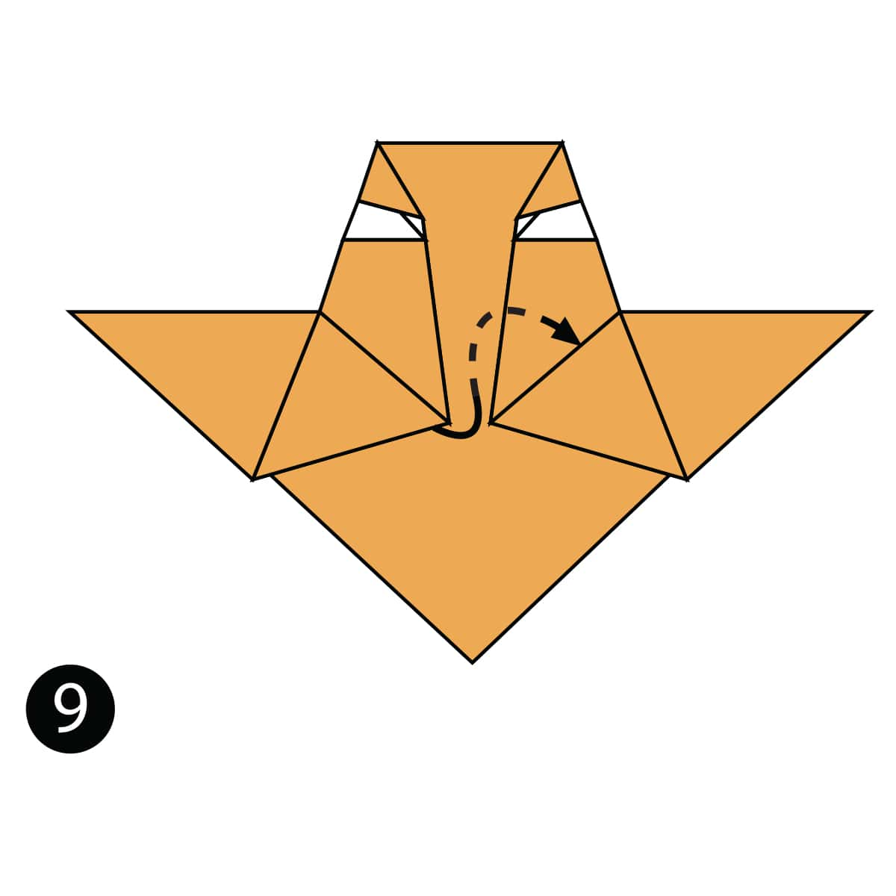

Origami Designs
About us
Follow us
Click on the pictures to go to the intructions

Intresting facts about camels.
1. Camels' ears are furry.
2. Camels can move easily across the sand because of their specially designed feet.
3. When they find water, they will drink as much as possible.

Interseting facts about chameleons.
1. Chameleons are reptiles that are part of the iguana suborder.
2. Changing skin color is an important part of communication among Chameleons.
3. Most Chameleons have a prehensile tail that they use to wrap around tree branches.

Interseting facts about pigeons.
1. Pigeons are incredibly complex and intelligent animals.
2. Pigeons are reowned for their outstanding navigational abilities.
3. Pigeons have excellent hearing abilities.

Intersenting facts about teddy bears.
1. The term bear-hug was first recorded in 1846.
2. The Oxford English Dictionary dates the first use of the term teddy bear to 1906.
3. In 1902 in Germany, Steiff launched “Bear 55 PB”, the first toy bear with jointed arms and legs.

Intersenting facts about pandas.
1. The giant panda's distinct black-and-white markings have two functions: camouflage and communication.
2. Like domestic cats, giant pandas have vertical slits for pupils.
3. Mother pandas keep contact with their cub nearly 100% of the time during their first month - with the cub resting on her front and remaining covered by her paw, arm or head.

Intersenting facts about cicadas
1. Cicadas can survive a huge fall as babies, or nymphs. They are about the size of a grain of rice when they drop from a tree branch to the ground and start digging.
2. Females may be attracted to the sound of motors. So you get to watch your dad, mom or older sibling get swarmed while they’re using the lawn mower or power tools.
3. Most have red-orange eyes. But occasionally cicadas have blue, white or grayish eyes. Keep on the lookout.